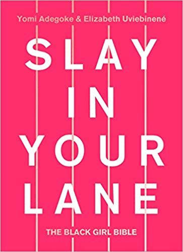
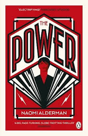
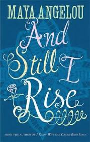

In Lean In, Sheryl Sandberg reignited the conversation around women in the workplace, combining personal anecdotes, hard data, and compelling research to change the conversation from what women can't do to what they can. Sandberg provides practical advice on negotiation techniques, mentorship, and building a satisfying career. She describes specific steps women can take to combine professional
Becoming
by Michelle Obama
£5.99
Becoming is the memoir
of former United States first lady Michelle Obama
published in 2018. Described by the author as a deeply
personal experience, the book talks about her roots and how she found
her voice, as well as her time in the White House, her public health
campaign, and her role as a mother.
Ghana must go
by Taiye Selasi
£5.99
A stunning novel, spanning generations and continents, Ghana Must Go
by rising star Taiye Selasi is a tale of family drama and forgiveness, for fans of Zadie
Smith and Chimamanda Ngozi Adichie. This is the story of a family -- of the simple,
devastating ways in which families tear themselves apart, ...

Slay in your lane
by Yomi Adegoke
£4.99
Slay In Your Lane is a series of books and a podcast by journalist Yomi Adegoke and brand strategist Elizabeth Uviebinené. The first book in the series, Slay In Your Lane: The Black Girl Bible (2018), is based on interviews the pair conducted with 39 successful black British women spanning different industries

The Power
by Naomi Alderman
£5.99
In her world, a story-within-a-story that's presented as historical fiction, teenage girls discover that they can generate electricity from their hands at will. This new power, as it reverberates throughout cultures across the world, changes everything.

Still, I rise
by Maya Angelou, Neubaue
£5.99
In Angelou's favorite poem, "Still I Rise", which shares its title with a play she wrote in 1976, she refers to the indomitable spirit of Black people, using repetition and the categorization of injustices against them.